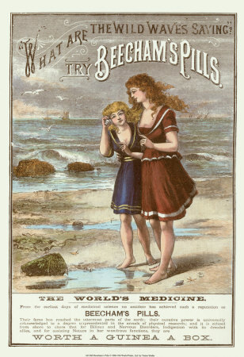
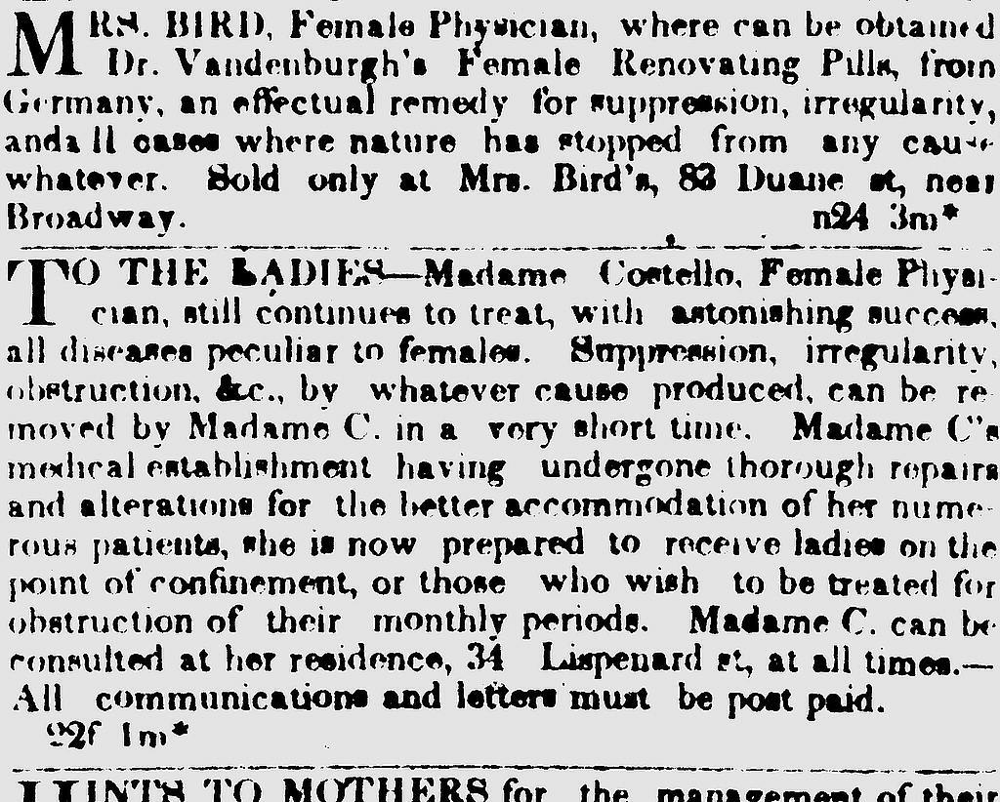
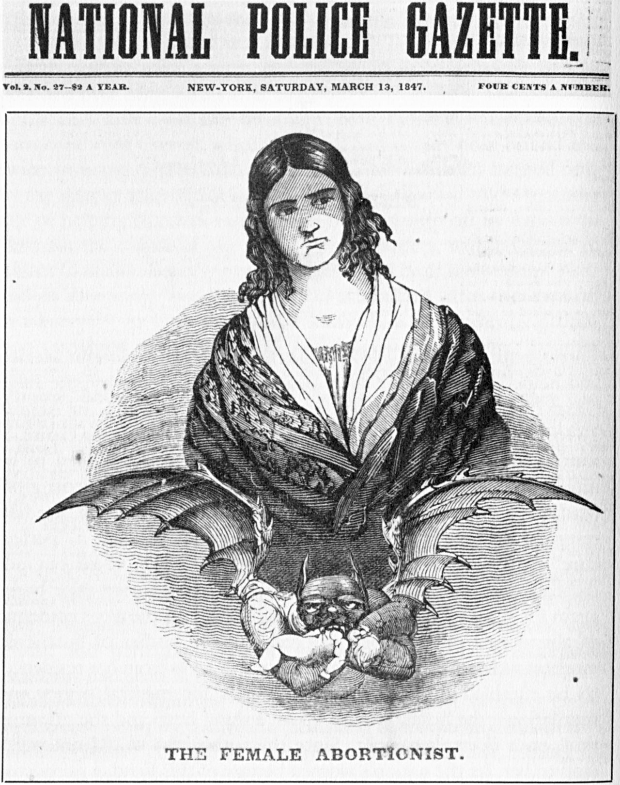

Abortion in America
Abortion in America
History of Abortion
Abortion Practices
Abortion has been around as long as there has been civilization in place. Many places throughout the world like China and Egypt have recorded evidence of termination of pregnancy dating back to 1500 BC. The methods used vary from region to region and time to time. They showase increasing knowledge about the female body over the years. The various methods described include deep abdominal massage, use of sharpened instruments, herbal medicines taken either orally or inserted vaginally as well as other techniques. While the technology in the entire public healthcare system developed drastically over time, due to the illegality of the abortion law, women in the United States still had to perform abortions discretely with unsafe methods from an unprofessional staff. This was knows as “Back Alley” abortion.
Abortion Rights
Contrary to popular belief, abortions have not always been a controversial political issue. In colonial America abortion was a safe and commonly practiced medical procedure and has been well documented. That is to say, abortion- the termination of pregnancy - was legal and did not have the stigma attached to as it is today. The earliest abortion laws only appeared in mid 19th century. The colonial America as well as the independent America a few years after the independence followed the English common law to abortion. The contemporary English law allowed abortion before quickening - a period when the women starts to feel fetal movements in her uterus. The quickening period is usually felt after about 18-20 weeks from the time of conception.
Common or Taboo?
The termination of pregnancy was definitely not a taboo in both the Colonial and newly independent United States. It was completely legal to perform an abortion if the pregnancy had not reached the quackening state which is when the mother starts to feel the fetal movement. There were more abortions performed in the 19th century than there are currently. But Abortion was illegal in America from 1820 to 1900 and in much of the America until the Roe V Wade case. The Roe V Wade provided a uniform framework to make abortion legal and thus accessible in America. While abortion remains legal, there are still on-ongoing and continous political efforts that provied strong resistance and abortion remains one of the most divise topics in the US socity and politics.
  